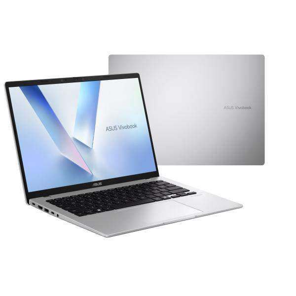
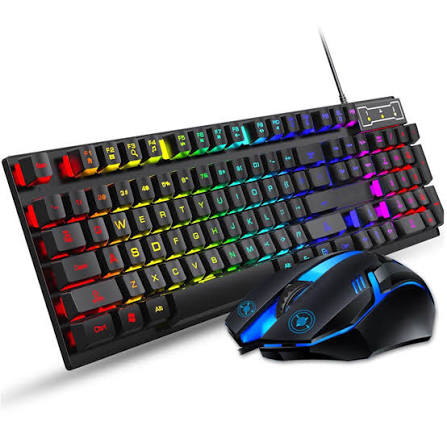

Our Products

Budget PC Package
₱14,999
Specs: Ryzen 3 3200G, 8GB RAM, 256GB SSD,
Integrated Graphics, 19-inch Monitor, Keyboard & Mouse.
A budget-friendly setup made for students who need an affordable
computer for programming, schoolwork, browsing, online classes, and
light gaming.
View details

ASUS Vivobook 14
₱14,999
Specs: Intel Core 3 Processor, 8GB RAM, 256GB SSD,
14-inch Full HD Display.
A compact and affordable laptop for students, ideal for programming,
schoolwork, online classes, browsing, and everyday productivity.

Student Gaming Keyboard & Mouse Set
₱499
Specs: RGB Backlit Keyboard, Mechanical-Feel Keys,
Adjustable DPI Mouse, USB Connection, and Compatible with Windows.
An affordable keyboard and mouse combo for students and casual gamers,
perfect for programming, schoolwork, browsing, and gaming.